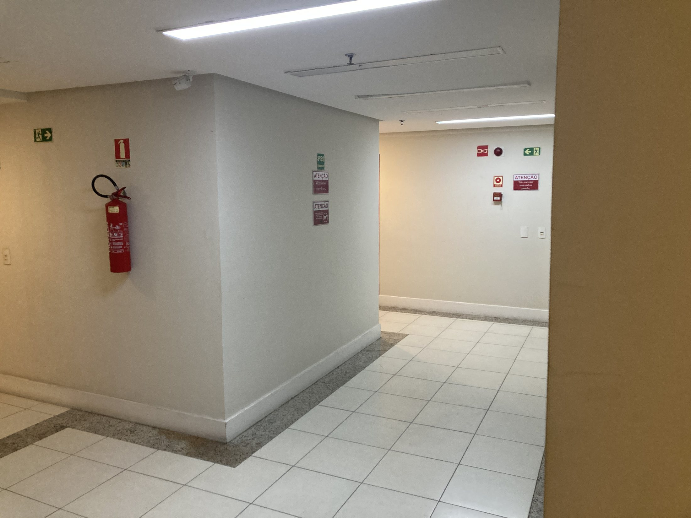
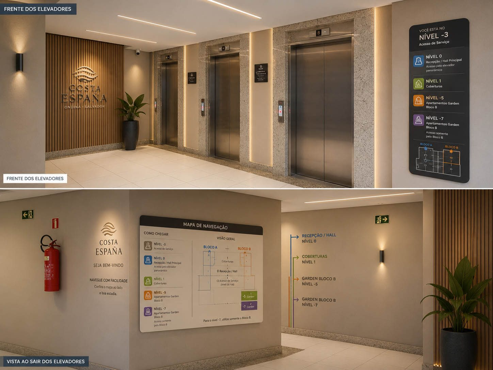
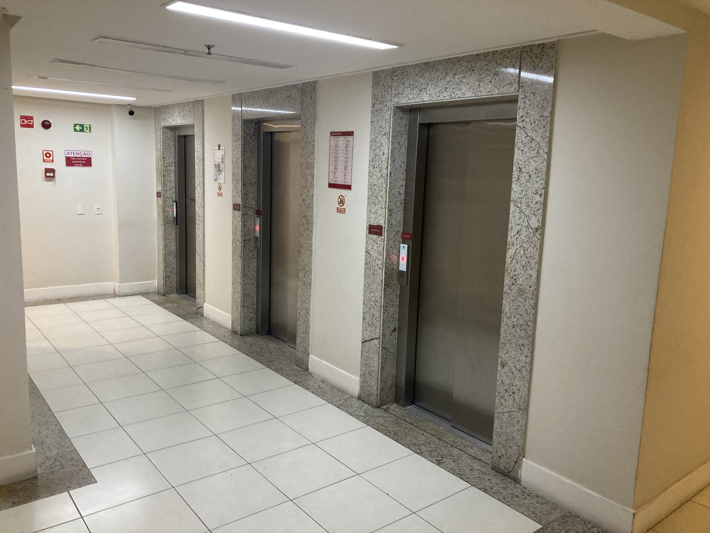

Corredores e elevadores
Estudo para reduzir ruído visual, melhorar a experiência dos pavimentos e criar uma identidade mais clara para circulação.

Proposta visual para requalificação do corredor.
Clique aqui para ver a imagem maior

Referência do fundo do elevador e circulação.
Clique aqui para ver a imagem maior

Proposta visual para valorização dos elevadores.
Clique aqui para ver a imagem maior

Referência frontal do elevador e hall.
Clique aqui para ver a imagem maior
Corredores e elevadores: revitalização inteligente sem descaracterização
Os corredores e elevadores talvez sejam uma das áreas mais delicadas e estratégicas de todo o Costa España. E isso acontece por um motivo simples: os corredores do prédio são extremamente longos. Qualquer decisão estética equivocada se multiplica dezenas de vezes ao longo da circulação e pode gerar um resultado visual cansativo, datado ou até excessivamente caro para corrigir depois.
Por isso, a proposta aqui não deve partir da ideia de “reforma pesada”, e sim de uma revitalização inteligente.
O piso existente é um ótimo exemplo disso. Gostando ou não dele, a realidade prática é que sua remoção dificilmente seria factível financeiramente em um projeto dessa escala. Então a estratégia correta não é lutar contra o piso, mas trabalhar a favor dele: escolher tonalidades, iluminação, texturas e elementos visuais que conversem com o material já existente e reduzam seu peso visual.
Hoje, a paleta dos corredores não está necessariamente “errada”, mas ela se tornou extremamente enfadonha. Falta contraste, falta profundidade, falta identidade visual. Além disso, algumas tonalidades atuais acabam sendo mais suscetíveis à aparência de sujeira, desgaste e monotonia ao longo do tempo.
Corredores muito extensos precisam de ritmo visual.
É exatamente aí que entram pequenos elementos arquitetônicos que parecem simples, mas mudam completamente a percepção do espaço: faixas horizontais, divisões sutis de pintura, texturas leves, contraste entre tons quentes e neutros, iluminação bem posicionada e pontos de respiro visual ao longo da circulação.
Aquela faixa ou tira visual aplicada na parede, por exemplo, não é apenas um detalhe decorativo. Ela ajuda a “quebrar” a monotonia do percurso e cria sensação de movimento e continuidade. Mas isso precisa ser feito com muito cuidado.
Esse tipo de intervenção não pode ser executado por pintura improvisada ou mão de obra sem refinamento técnico. Linha torta, textura mal aplicada, encontro de tinta mal resolvido ou desalinhamento visual podem empobrecer completamente o resultado. O sucesso desse tipo de revitalização depende muito mais de execução cuidadosa do que de materiais caros.
Iluminação e leitura arquitetônica
Outro ponto absolutamente fundamental é a iluminação.
Corredores residenciais longos quase sempre funcionam melhor com iluminação quente. E isso não é apenas uma questão de “gosto”. Existe uma lógica arquitetônica e psicológica por trás disso.
Luz branca fria tende a deixar espaços de circulação mais hospitalares, impessoais e cansativos visualmente. Em corredores extensos, esse efeito se intensifica ainda mais, gerando sensação de rigidez e desconforto.
Já a iluminação quente cria acolhimento, reduz a sensação de frieza do concreto e dos revestimentos, suaviza imperfeições e valoriza materiais naturais, como madeira, pedras e tonalidades terrosas.
Além disso, luz quente conversa muito melhor com a proposta tropical e residencial que o Costa España pode desenvolver ao longo dos próximos anos.
Outro detalhe importante é a saída dos elevadores.
Esses pequenos núcleos podem funcionar quase como “ilhas de respiro” dentro da circulação. Plantas bem escolhidas, vasos elegantes, sinalização bonita, lógica e funcional, pequenos elementos de identidade visual e iluminação correta conseguem transformar radicalmente a percepção do andar sem necessidade de grandes intervenções.
A sinalização, inclusive, merece atenção especial.
Ela não deve parecer corporativa, improvisada ou excessivamente técnica. Deve ser clara, elegante e intuitiva. Um condomínio de alto padrão não comunica sofisticação apenas através de materiais caros, mas principalmente através da coerência visual e da qualidade dos detalhes.
O mais importante é entender que corredores não são apenas áreas de passagem.
No Costa España, eles fazem parte da experiência cotidiana do prédio. São vistos todos os dias, inúmeras vezes por dia, por moradores, visitantes, funcionários e prestadores de serviço.
Quando bem resolvidos, ajudam a criar sensação de cuidado, continuidade estética e valorização patrimonial. Quando negligenciados, cansam visualmente o morador sem que ele sequer perceba conscientemente o motivo.
A proposta, portanto, não é reinventar os corredores. É refiná-los com inteligência.